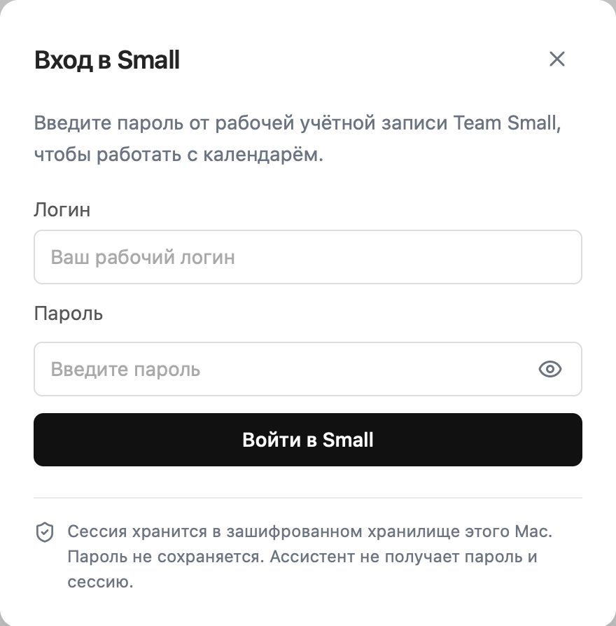
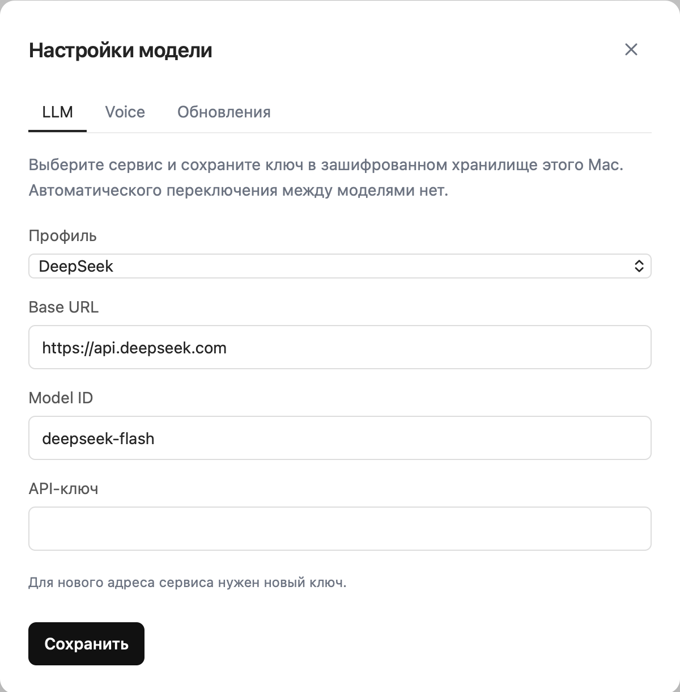
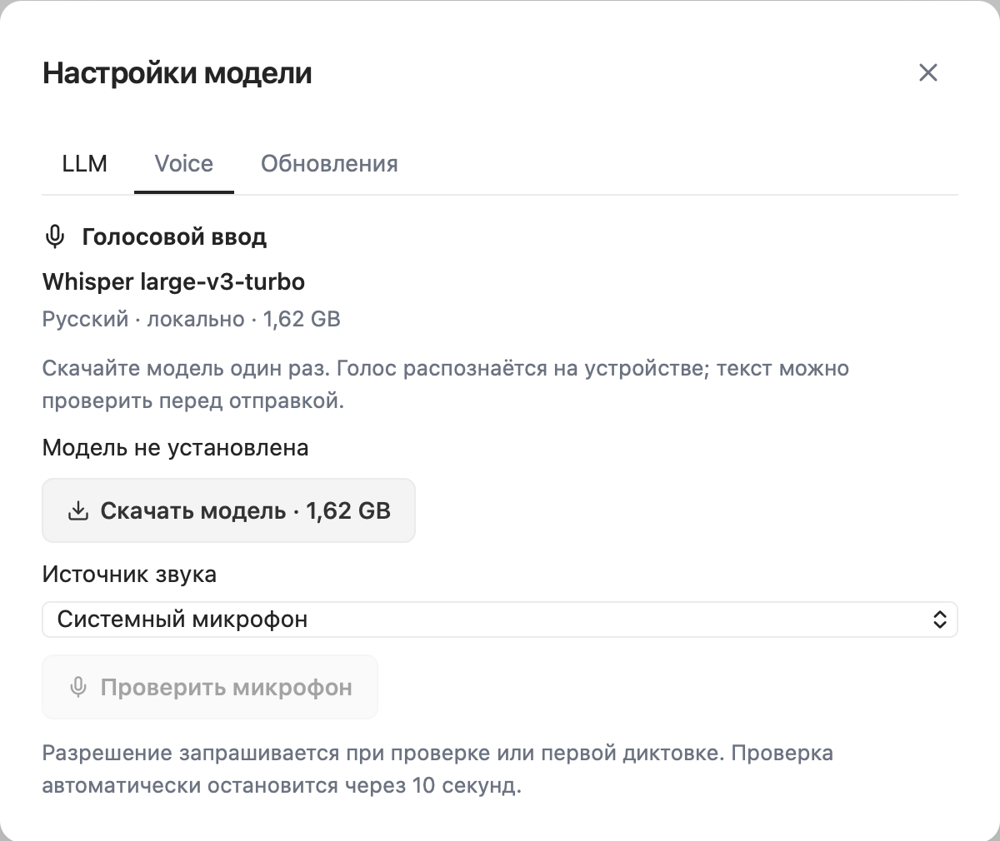

ORDO ДЛЯ macOS
Рабочий календарь с AI-ассистентом
Ordo объединяет рабочее расписание, поиск свободного времени, встречи и ассистент в одном окне. Приложение и установщик подписаны Apple Developer ID и прошли нотариализацию Apple.
УСТАНОВКА
Скачайте и откройте Ordo
Версия 0.3.0 от 26 ноября 2026 · macOS 15.1+ · Apple Silicon
- Откройте скачанный Ordo-0.3.0-arm64.dmg.
- Перетащите Ordo.app в папку Applications («Программы»).
- Запустите Ordo из «Программ».
При переходе с предварительного выпуска или локальной сборки установите Ordo через DMG один раз. Дальнейшие стабильные обновления будут доступны внутри Ordo. Перед заменой приложения закройте старую версию.
РАБОЧИЙ АККАУНТ
Войдите в аккаунт
Откройте форму входа и введите рабочий логин и пароль. После входа появятся ваши календари и встречи. Пароль не сохраняется.

AI-АССИСТЕНТ
Подключите модель
- Откройте «Настройки модели» кнопкой справа в заголовке ассистента.
- На вкладке LLM выберите сервис. Проверьте Base URL и Model ID и введите свой API-ключ.
- Нажмите «Сохранить» и отправьте ассистенту короткий запрос.

Можно просматривать расписание, искать сотрудников и свободные интервалы, готовить встречи и изменять состав участников. Запись изменений в календарь требует вашего подтверждения.
В «Настройках AI-помощника» доступны стиль общения и ваши инструкции. В новом профиле настроение нейтральное, инструкции и пользовательская память пустые.
ПО ЖЕЛАНИЮ
Включите голосовой ввод
В настройках модели откройте Voice и скачайте модель распознавания. Затем нажмите микрофон рядом с полем сообщения и при первом использовании разрешите доступ к микрофону. Распознавание выполняется на Mac; веса модели загружаются отдельно.

НОВЫЕ ВЕРСИИ
Обновляйтесь внутри Ordo
Ordo проверяет новые версии после запуска и затем каждые 4 часа. Проверить вручную можно в «Настройки модели» → «Обновления».
Новая версия скачивается автоматически. Когда она готова, выберите «Установить и перезапустить» и подтвердите перезапуск. Можно отложить установку. Перед перезапуском сохраните незавершённые изменения.
Настройки, сессия аккаунта, ключи и контекст Ordo сохраняются при обновлении. Приложение проверяет подпись и контрольную сумму пакета.
ИСТОРИЯ ИЗМЕНЕНИЙ
Changelog
0.3.0 · Ordo
· стабильный канал
- Новое название Ordo и новая иконка приложения.
- Нативная оболочка Go/Wails с системным WebKit.
- Подпись Apple Developer ID и нотариализация приложения и DMG.
- Подписанные обновления внутри Ordo: автоматическое скачивание и установка с подтверждением перезапуска.
- Сохранены рабочий календарь, AI-ассистент, свободные слоты, участники встреч и локальный голосовой ввод.
- Упрощённая инструкция и новые скриншоты текущего интерфейса.
SHA-256 DMG:
62ada50aedb730f682f9c4b6498c8e7f46a0cdccd05607c5b3cba27a9e923406.
Контрольные суммы файлов релиза.
Архив — предыдущие версии
0.2.0-rc.7 · предварительный релиз
· macOS · Apple Silicon
- Добавление участников через ассистента
- Попросите найти существующую встречу и добавить сотрудников. Ассистент покажет карточку изменения: проверьте состав и нажмите «Добавить участников». Прежние участники, время и остальные параметры сохраняются. Доступно организатору разовой встречи; пересечения требуют отдельного подтверждения.
- Большие существующие встречи
- В редакторе можно выбрать до 100 участников и до 100 информируемых. Ограничение 20 сотрудников для создания и подбора времени больше не мешает редактировать большой состав. При достижении лимита форма объяснит причину блокировки; удаление одного выбранного сотрудника снова разрешит добавление.
- Ответы на приглашения
- В карточке встречи доступны «Придёте?» и кнопки «Да» / «Нет». Согласие и отказ сохраняются и остаются выбранными после повторного открытия карточки. Организатор и информируемые сохраняют свои отдельные роли.
- Обновление календаря
- Ответ на приглашение больше не убирает встречу из сетки на время обновления. Фоновые изменения не перекрывают открытый диалог анимацией. Сохранены свободные слоты на день/неделю и исправление Escape в выборе времени.
Предварительная сборка с локальной ad-hoc подписью, без
нотариализации Apple. Автообновление отключено; обновите
приложение вручную через DMG. Новый профиль пустой, настроение —
нейтральное. Веса Whisper скачиваются отдельно. SHA-256:
891abd639b3c1e86774aaef144beb750b0607c177dfc4cd346815d4586ab1795.
Предыдущая версия — 0.2.0-rc.6, 10 ноября 2026
0.2.0-rc.6 · предварительный релиз
· macOS · Apple Silicon
- Подтверждение пересечений
- Если выбранное время занято, форма создания или редактирования встречи показывает предупреждение и участников с пересечениями. Можно вернуться к форме без потери данных или явно подтвердить сохранение.
- Встреча через ассистента
- Если вы повторяете просьбу на конкретное время или пишете «всё равно поставь», ассистент сохраняет время и состав и показывает карточку с предупреждением. Встреча создаётся только после нажатия «Да, поставить встречу».
- Сохранены свободные слоты
- Панель доступности на день и неделю, выбор участников и повторная проверка времени перед открытием формы остаются доступны рядом с чатом.
- Исправлено: выбор времени
- При быстром открытии списка времени и нажатии Escape закрывается только список, без запроса отмены всей встречи. Клавиатурное управление использует фактическое состояние меню.
- Размер интерфейса
- Из сборки исключены неиспользуемые темы оформления. Внешний вид и компактная плотность сохранены.
Предварительная сборка с локальной ad-hoc подписью, без
нотариализации Apple. Автообновление отключено; обновите
приложение вручную через DMG. Новый профиль пустой, настроение —
нейтральное. Веса Whisper скачиваются отдельно. SHA-256:
29346edc2b1f13a2def170507fe6476794eb2f645dcd9f0cf6301fd689379a46.
Предыдущая версия — 0.2.0-rc.4, 10 ноября 2026
0.2.0-rc.4 · предварительный релиз
· macOS · Apple Silicon
- Добавлено: свободные слоты
- Запрос ассистенту открывает панель доступности на день или неделю рядом с чатом. Поиск сотрудников, закреплённый организатор, длительность, рабочий диапазон, перерывы и выбор даты связаны с текущим запросом.
- Проверка занятости
- Общие и личные окна рассчитываются по полному покрытию занятости. Неизвестные интервалы отмечаются отдельно. Перед открытием формы точное время повторно проверяется; создание встречи требует сохранения.
- Продолжение работы
- Уточняйте состав и параметры в чате, переключайтесь между календарём и свободными слотами. Новый диалог очищает панель предыдущего запроса.
- Установка и обновление
- Закройте календарь, установите новый DMG в «Программы» и подтвердите замену. Данные существующего профиля сохраняются. Новый профиль запускается без авторизации, ключей и пользовательской памяти, с нейтральным настроением. Веса Whisper скачиваются отдельно.
Предварительная сборка с локальной ad-hoc подписью, без
нотариализации Apple. Автообновление отключено; используйте
ручную установку через DMG. SHA-256:
4e94c8f31834dedd86bdb36832f50e2b69902727f5bf8fb9f7d90c177bd71053.
Предыдущая версия — 0.2.0-rc.3, 9 ноября 2026
0.2.0-rc.3 · предварительный релиз
· macOS · Apple Silicon
- Выбор времени
- В форме создания и редактирования события список открывается на текущем времени. Шаг — 15 минут; точное время можно ввести вручную. Стрелки перемещают выбор, Enter применяет время, Escape закрывает список.
- Быстрая длительность
- Под датой и временем нажмите «15 мин», «Полчаса», «Час», «Полтора» или «2 часа». Окончание рассчитывается от начала. Выбранная длительность выделяется; при переходе через полночь появляется подпись о следующем дне. Проверки занятости и рабочих часов продолжают действовать.
- Обновления календаря
- Откройте «Настройки модели» → «Обновления», чтобы увидеть версию и доступность автообновлений. Для выпусков с Developer ID реализованы проверка при запуске и каждые 4 часа, скачивание с прогрессом, описание изменений и подтверждение перезапуска. Можно отложить установку. Настройки, авторизация и контекст сохраняются.
- Ограничение этого DMG
- В этой предварительной сборке с локальной подписью автообновление отключено. Новую версию устанавливайте вручную через DMG: закройте календарь, перенесите приложение в «Программы» и подтвердите замену. Не удаляйте пользовательские данные. Демонстрационное уведомление об обновлении в пакет не включено.
Локальная ad-hoc подпись, без нотариализации Apple.
Автообновление требует первого вручную установленного выпуска с
Developer ID и опубликованного ZIP с метаданными; стабильный
канал не устанавливает предварительные версии. Для первого
запуска используйте шаг 04. SHA-256:
bcfe043e6d1323564d959c041e1e63d35b2ec7bcd8cae7254fd9662b12714588.
Предыдущая версия — 0.2.0-rc.2, 9 ноября 2026
0.2.0-rc.2 · предварительный релиз
· macOS · Apple Silicon
- Поиск сотрудников
- Введите имя или должность. Поиск запускается через 300 мс после последнего ввода; Enter и кнопка запускают его сразу. Нажмите на сотрудника в выдаче — он появится чипом, а поле поиска очистится. Чекбоксов нет, уже выбранные люди скрыты из выдачи.
- Организатор встречи
- Организатор включён в состав встречи и защищён от удаления при создании и редактировании. Остальных участников можно удалить крестиком на чипе.
- Ссылки конференций
-
Новые адреса состоят ровно из трёх английских слов, например
funky-monkey-party. Ссылка сохраняется в поле встречи через API календаря, отдельно от описания. Ранее созданные ссылки сохраняются при редактировании. - Надёжность поиска
- Быстрый ввод не создаёт запрос на каждую букву; ответы на уже изменённый или очищенный запрос не возвращают устаревшую выдачу. Поддерживаются поиск с клавиатуры и подгрузка следующих страниц.
Предварительная сборка с локальной подписью, без нотариализации
Apple. Для первого запуска может потребоваться подтверждение по
шагу 04. SHA-256:
f8350673ecc6ddf1cf607f6db25c28c769a440b5553f8474b3bba50ff4673c63.
Предыдущая версия — 0.2.0-rc.1, 31 октября 2026
0.2.0-rc.1 · предварительный релиз
· macOS · Apple Silicon
- Добавлено
-
- Голосовой ввод на русском. Whisper large-v3-turbo распознаёт речь на Mac. Модель скачивается отдельно с прогрессом, паузой, продолжением и проверкой готовности. Доступны выбор и проверка микрофона.
- Профиль DeepSeek. Его можно настроить рядом с vLLM и OpenAI Compatible; ключи профилей хранятся отдельно.
- Справка внутри приложения. Инструкции, иллюстрации и примеры запросов доступны рядом с профилем. Пример подставляется в черновик для проверки перед отправкой.
- Шаблон поиска по организатору. В стартовые запросы добавлен пример поиска событий за месяц.
- Изменено
-
- Настройки модели разделены на LLM и Voice. LLM содержит параметры сервиса и API-ключ; Voice — модель распознавания и источник звука. Голосовой ввод перенесён из настроек AI-помощника.
- Быстрое переключение LLM. Нажатие на название модели рядом с сообщением открывает меню сохранённых моделей. Поддерживаются клавиатура и сохранение выбора.
- Диктовка заполняет черновик. После остановки текст вставляется в позицию курсора или заменяет выделение. Отправка выполняется отдельно, отмена доступна по крестику и Escape. Лимит записи — 120 секунд.
- Инструкция обновлена. Добавлены настройка LLM/Voice, проверка микрофона и пошаговое использование голосового ввода.
- Исправлено
- Повышена совместимость инструментов просмотра встреч и аналитики с OpenAI-совместимыми сервисами: схемы запросов передаются как объекты, при этом проверка входных данных сохраняется.
Предварительный релиз для Apple Silicon. Приложение подписано
локально и не нотариализовано Apple: при первом запуске macOS
может потребовать подтверждение открытия по шагу 04. SHA-256
установщика:
1356ffc61d4af6cce0e4da951cc09e477e3a2d7c3b4d2fd3cd1ff6bda7e69638.
Предыдущая версия — 0.1.0 snapshot, 31 октября 2026
Представление «Список», поиск событий ассистентом и исправления входа. Открыть предыдущий релиз.